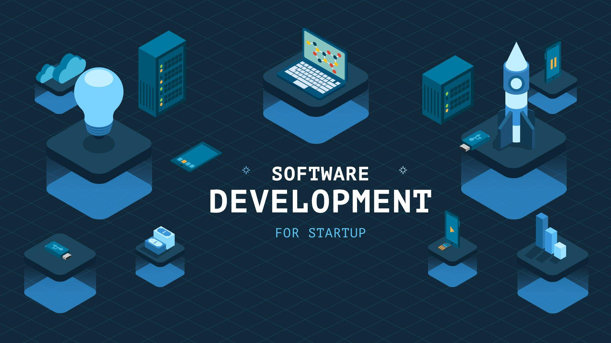
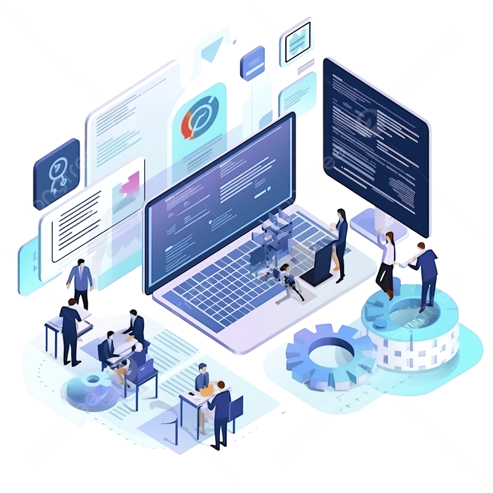
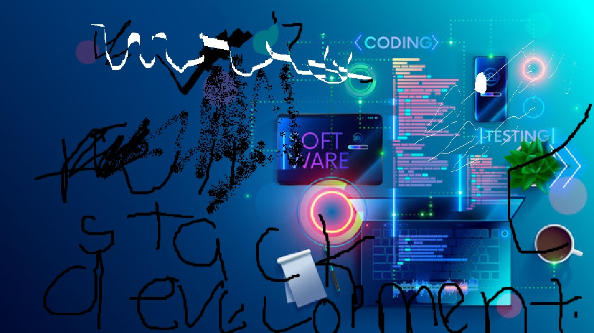

Become a job-ready full-stack developer in just 8 months
Our Full-Stack Software Development Program prepares students to build real, scalable web applications from start to finish. You will learn both frontend and backend development, databases, APIs, DevOps basics, and modern industry practices.
Explore full stack software development learning key points that creat a path to becoming expert
this is the part of software and web development that focuses on what users see, interact with, and experience directly in a browser or application. Here you'll learn HTML, CSS, JavaScript, React, Responsive Design
More DetailsThis is the part of software and web development that focuses on everything that happens behind the scenes — the logic, databases, servers, and APIs that power an application. Here you will learn Node.js, Express, REST APIs, Authentication
More DetailsDatabase is the component responsible for storing, organizing, and retrieving application data. It works together with the backend and frontend to deliver a complete, functional system. Here you will learn MySQL, MongoDB, PostgreSQL
More DetailsIt focuses on the tools, processes, and automation used to build, test, deploy, and maintain software efficiently. You use tools like Git, GitHub, Docker, Cloud Deployment, Azure
More DetailsThis is a way for software systems to communicate with each other. In full-stack development, APIs allow the frontend to talk to the backend, and the backend to talk to external services. Here you learn how to handle GET, POST, PUT, DELETE, Sending JSON data, API security
More DetailsMeans protecting your application, data, and users from attacks and vulnerabilities. It covers the frontend, backend, database, server, APIs, and network. it involve Authentication (AuthN), Authorization (AuthZ), Password Security, API Security, Frontend Security, Backend Security, Database Security, HTTPS & Encryption, DevOps Security
More DetailsTesting in full-stack software development means checking that your application works correctly, safely, and reliably. It helps find bugs early, improve quality, and ensure a smooth user experience. you will learn unit testing, intergration testing, End to end testing, Fuctional testing,perfomance testing,security testing, Manual testing
More DetailsAfter 8-month training you can now build fully working systems, web applications, websites, chat bots ,blog applications for different companies, schools, hospital , government
More DetailsFull-stack architecture is the structural design of an application that covers frontend, backend, database, APIs, and deployment layers. It determines how these components interact, how data flows, and how the system scales, secures, and performs.
More DetailsSoft skills in full-stack software development are non-technical abilities that help you communicate, collaborate, and work effectively, problem-solving, creativity, leadership in a team or project. They are just as important as technical skills because they make you a well-rounded developer who can deliver projects successfully.
More DetailsVersion control is a system that tracks and manages changes to your code over time. It’s an essential skill for full-stack developers because it allows you to work efficiently, collaborate with others, and maintain a history of your project. here you will learn its importance which include Branching & Merging, Track Changes
More DetailsFull stack software development is continous field that requires dedication of the programmer. This empower you to update you coding skill every time. This involve continous learning
More Details